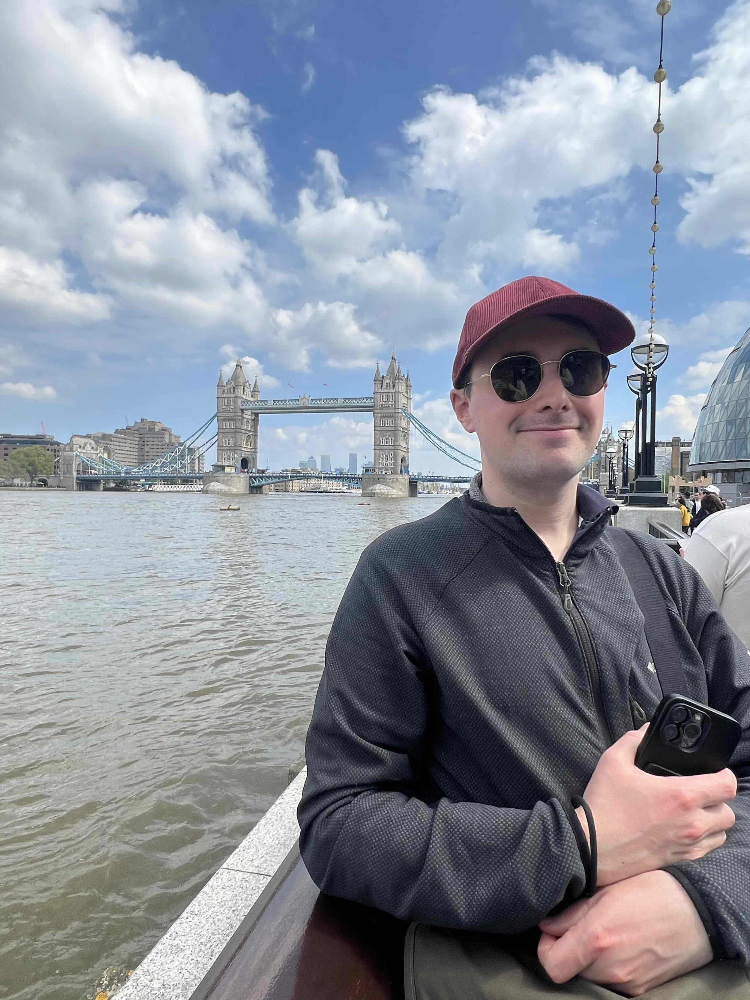

About
Currently living in Minneapolis, Minnesota, I originally went to Humboldt State University (now Cal Poly Humboldt) to study studio arts. Following graduation I worked for five years as an architecture and editorial photographer; the last two of those years was also photo assisting for a Portland, OR product photography studio where I picked up additional skills in studio lighting for fashion, tabletop, bedroom size product sets and on-location lighting. In 2020 facing marketing and work burnout in the midst of covid I pivoted my career to Software Engineering and after a dry spell in the art world I'm aiming to kick-start my art practice again.
Honors & Awards
- 2017 Northwest Eye Best of Show, Morris Graves Museum of Art, Eureka CA
- 2015 Tom Knight Award for Photography, Humboldt State University
- 2015 Art Department & Community Award, Humboldt State University
- 2015 Northwest Eye Best of Show, Morris Graves Museum of Art, Eureka CA
Selected Group Exhibitions
- 2017 Northwest Eye, Morris Graves Museum of Art, Eureka, CA
- 2015 Chancellors Gallery, CSU Monterey Bay, Salinas, CA
- 2015 Art Graduates Exhibition, Humboldt State University, Arcata, CA
- 2015 Northwest Eye, Morris Graves Museum of Art, Eureka, CA
- 2014 Chancellors Gallery, CSU Monterey Bay, Salinas, CA
Publications
- 2019 Humboldt Insider Magazine Spring & Summer Quarterly Issues
- 2018 Insider Magazine – Feature on the Eureka Theatre + Full Page Spread
- 2014 Lenscratch.com Group Feature
Past Commercial & Non-profit Clientele
- Humboldt Insider Magazine
- K. Boodjeh Architects
- Pacific Builders Arcata
- Adams Commercial General Contracting
- La Macchia Group
- North Coast Open Studios
- Northcoast Dance Education
Education
2015 Humboldt State University (now Cal Poly Humboldt), Bachelors in Studio Arts, Arcata, CA
Coursework focused primarily on photography under instructors Nicole Jean Hill and Dave Woody:
- Beginning, intermediate, advanced darkroom photography to include 35mm, 4×5, in addition to alternative practices: cyanotypes, hybrid digital/analog workflows involving conversion of digital images to transparencies used in analog printing, scanning and processing of 4×5 negatives to create inkjet prints etc.
- Beginning, intermediate and advanced digital photography in addition to portfolio review/development and professional practices.
- Other courses included: color and design, printmaking, sculpture, graphic design, art history. Each has had an impact in how I see and compose photographs through the use of light, color, subject and composition.
- In addition to a full load of coursework I worked as a lab assistant in the digital and graphic design labs.